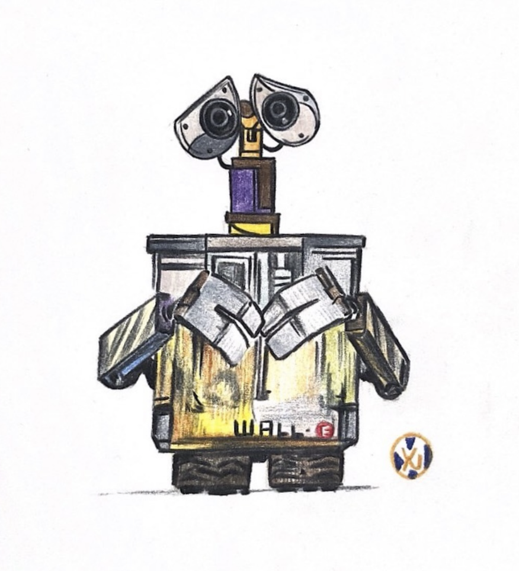

Movie Interpretation Drawings And A Famous Line
Draw what I like and interested in :)
 Tangled (2010)
disney
Tangled (2010)
disney
-
Venture outside your comfort zone, The rewards are worth it.
익숙한 곳을 벗어난다면 그 보상은 충분히 가치 있을 거야.
-
Our fate lives within us. You only have to be brave enough to see it.
우리는 운명 안에 살아가는 데 볼수 있는 만큼만 용감하면 돼.
zootopia (2016)
disney
-
Change starts with you.
변화는 너로부터 시작해.
-
Life is not some cartoon musical.
인생은 무슨 만화 뮤지컬이 아니야.
Finding Dory (2016)
disney & pixar
-
When something is too hard, there is always another way.
너무 지치고 힘들 때는, 언제든지 다른 길이 있어.
-
just keep swimming.
계속 헤엄쳐..

WALL-E (2008)
disney & pixar
-
I don't want to survive, I want to live.
나 살아남고 싶지 않아, 난 살고싶어.
-
You've come a long way to drink water.
너 물 마시러 정말 멀리도 왔구나.
Frozen (2013)
disney
-
Growing up means adapting Puzzling out your world and your place.
나이가 든다는 건 적응한다는 뜻이야. 너의 세상에 대해 깊이 생각하면서 답을 알아간다는 거지.
-
Just when you think you found your way, life will throw you onto a new path.
네가 새로운 길을 찾았다고 생각할 때 인생은 너를 새로운 길로 내던질거야.